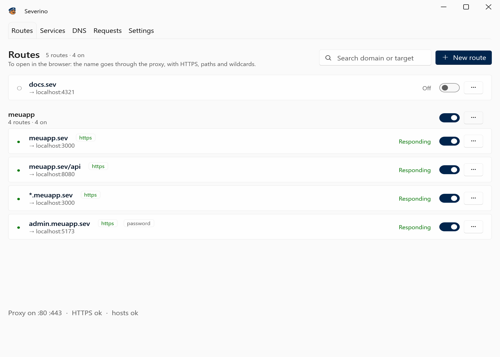
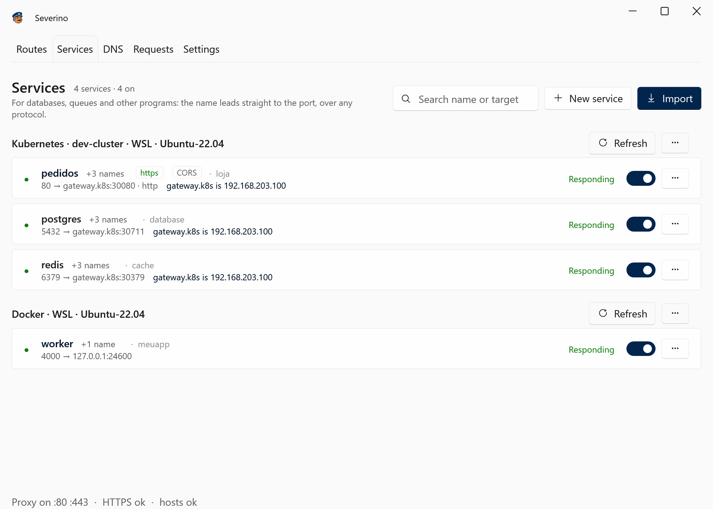
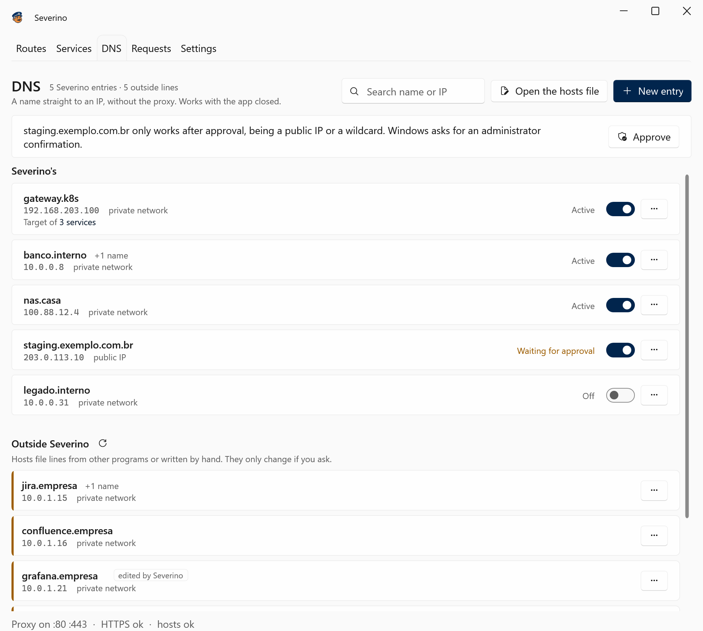
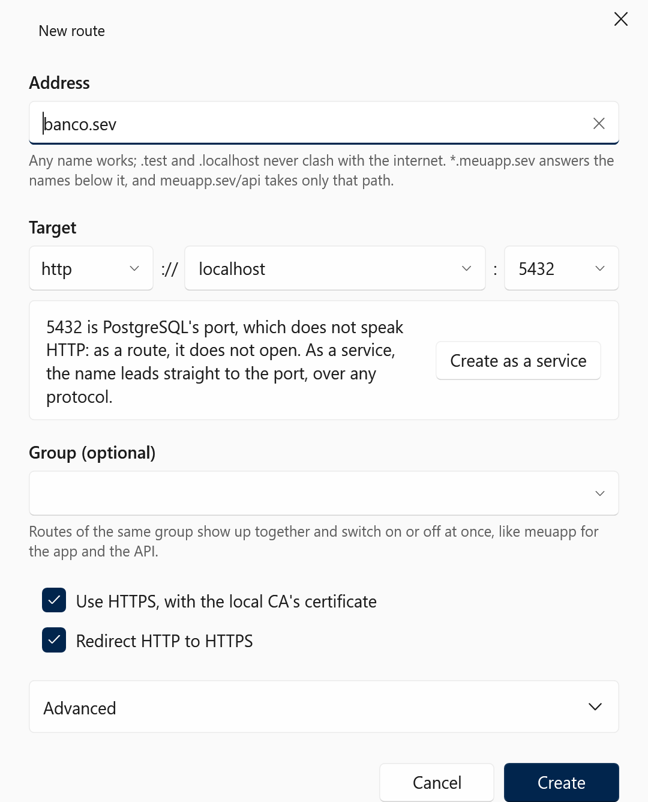
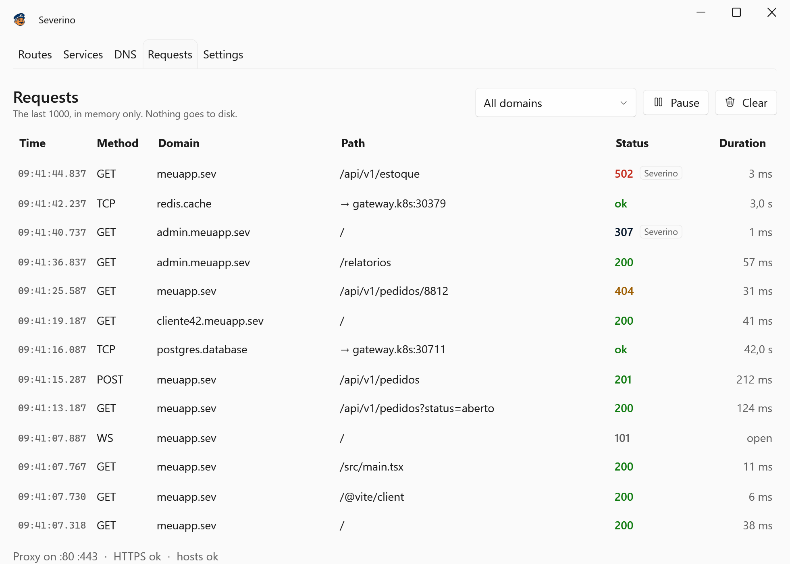
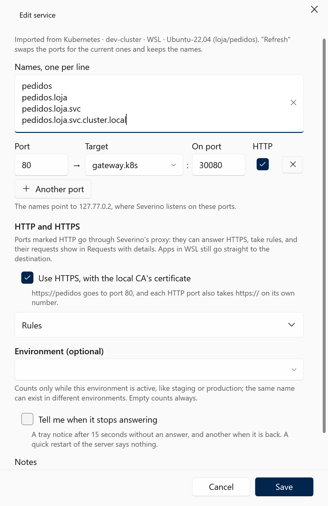
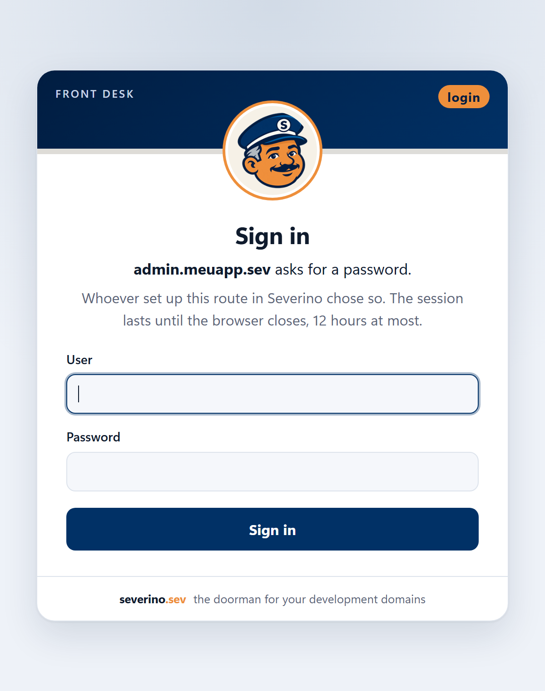
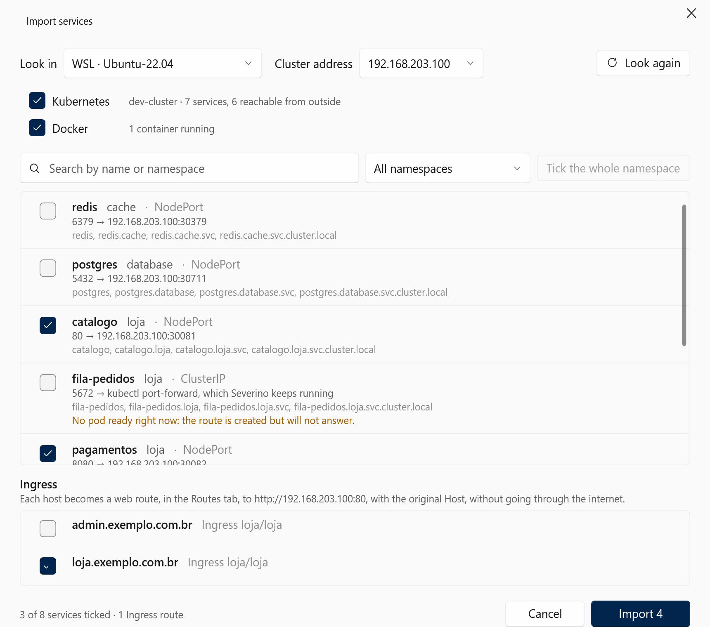

No more localhost:3000.
Severino is the doorman for your dev apps. Each one gets a name, like meuapp.sev, with real HTTPS, whether it runs on Windows, in WSL, in a container or in the cluster. The hosts file, the proxy and the certificate are on him.
Free and open source. For Windows 10 and 11, 64-bit.
A shift at the front desk.
Loose ports become names, the browser gets a padlock, and WSL, Docker and the cluster all come in through the same door.
Your app lives at one of four addresses. The doorman serves them all.
Front end on Windows, API in WSL, worker in a container, database in the cluster. From the browser or the terminal, each one answers by name.
-
Windows
Vite, .NET, Spring: whatever runs on localhost gets a name and a padlock.
meuapp.sev → localhost:3000 -
WSL
Switch the distro on, and the apps inside call the same names. Nobody edits /etc/hosts by hand.
~$ curl http://pedidos.loja -
Docker
A container by its Compose service name. Recreated on another port? He notices on his own.
worker:4000 → container -
Kubernetes
The service by its in-cluster name. NodePort, port-forward or Ingress: he picks the way.
postgres.database:5432
Three steps. One is yours, two are his.
-
Give the name and the port
In a window, no terminal. If the target is a database or another machine, he suggests the right kind of name.
-
He sets up the front desk
Writes the name to the hosts file, in a block of his own, and starts answering on ports 80 and 443.
# >>> Severino managed block (do not edit) 127.0.0.1 meuapp.sev ::1 meuapp.sev # <<< Severino -
Open it in the browser
Padlock and all. Hot reload and WebSockets keep working.
Three ways to give a name. Each in its own tab.
A route for the browser, a service for the rest, DNS for other machines. And the three tabs talk: change an IP in DNS and everything that uses that name follows.
Routes: to open in the browser
- HTTPS without drama. A certificate authority of your own, which only signs your domains.
- One domain, several apps. meuapp.sev/api goes to the API, the rest goes to the front end.
- Wildcards. *.meuapp.sev answers cliente42.meuapp.sev and any other name below it.
- Groups. One switch turns the whole project on or off.
- A password at the door. Severino's own login page, Basic Auth or a required header, when you want one.

Services: for databases, queues and the rest
- Any protocol. Postgres, Redis, gRPC, RabbitMQ: the name leads straight to the port, byte for byte.
- They come ready. Import from Kubernetes and Docker, on Windows or in WSL.
- They fix themselves. A container recreated on another port answers again within seconds.
- Targets by name. gateway.k8s instead of the node's IP, with the IP always in sight.
- HTTPS for APIs too. Mark a port as HTTP and https://pedidos.loja answers, with CORS and the route rules.

DNS: a name straight to an IP
- Works with the app closed. banco.interno to 10.0.0.8, like a line written by hand, in WSL too.
- The whole hosts file in sight. Lines from other programs show up marked, and only change if you ask.
- No administrator Notepad. Private networks go in right away; a public IP asks for Windows' confirmation.

Picked the wrong kind? He tells you.
A route to 5432 would never open in a browser. Severino recognizes PostgreSQL's port and offers to create a service from what you already typed.

Every request, with status and time
What went past the doorman, WebSockets and service connections included. It stays in memory only: nothing goes to disk.

Services that speak HTTP get what routes have
Tick HTTP on the port and it goes through the doorman: HTTPS from your CA, CORS, headers and simulated failures, and every call in Requests. The app's Host still reaches the cluster.

A password at the door, when you want one
To try an app the way staging protects it: Severino's own login page with a session, Basic Auth, or a header like X-Api-Key. Only hashes are kept, never the password.

The cluster by its in-cluster names
Your app calls postgres.database:5432 as it would inside Kubernetes, and gets there. Without changing a line of configuration.
- Imports on its own. Asks the kubectl and docker you already have, on Windows or inside WSL, and lists what it found. You just tick.
- All four names. pedidos, pedidos.loja, pedidos.loja.svc and pedidos.loja.svc.cluster.local lead to the same place.
- ClusterIP only? Fine. He keeps a kubectl port-forward running and restarts it when the VPN blinks.
- Ingress the short way. The public name becomes a route straight to the controller, without a trip through the internet.
- Docker by its Compose name. worker:4000 reaches the container's published port, whatever it is today.
- Apps in WSL too. The distros you switch on get the same names.

~$ curl http://pedidos.loja/saude
{"status":"ok"}
~$ psql -h postgres.database -U app
psql (16.4)
app=>And the little things that make a difference
-
From the terminal
A PowerShell module talks to the running app, with the same rules as the screens.
PS> New-SeverinoRoute api.sev http://localhost:8080 -Https PS> Set-SeverinoDns banco.interno 10.0.0.8 PS> Disable-SeverinoRoute -Group meuapp -
Pause in one click
The tray button hands the domains back to the internet right away. Click again, and it all comes back.
-
Backup
Routes, services and DNS entries in a single file, for the new machine or a teammate.
-
Updates in one click
When a new version comes out, the app tells you, checks the installer's SHA-256 and updates without losing anything.
It has administrator access. That is why it tells you everything.
A doorman you can trust says exactly what he does with the building's keys.
- Hosts file
- Two marked blocks: the routes one, always with loopback addresses, which pausing or closing the app empties; and the DNS entries one, which stays. Outside lines only change when you ask, with a comment above them.
- Helper service
- The only part that runs as administrator. Writes the hosts blocks, answers wildcards from a DNS server of its own on 127.53.0.1 and creates the Windows rules that send those suffixes there. A new public IP or wildcard only goes in after your confirmation. The app itself runs as you.
- Proxy
- Listens on 127.0.0.1 and ::1 only. Nothing is exposed to the network.
- HTTPS
- A certificate authority of your own, which can only sign your domains. Its key is protected by Windows, in your account.
- Leaving
- "Clean up everything", in Settings, and the uninstaller take out what Severino put in: the hosts blocks, the DNS rules, the certificate authority, starting with Windows and the names in the WSL distros.
Questions at the front desk
Does it work on macOS or Linux?
No: Severino is a Windows app. But if you develop on Linux through WSL 2, that is exactly its case.
Do I need Docker Desktop?
No. It uses whatever docker is at hand, on Windows or inside a WSL distro. With no Docker at all, routes and DNS work just the same.
And for Kubernetes, what do I need?
A configured kubectl, on Windows or in WSL. Severino uses the current context. If the cluster sits behind a VPN, the VPN you already use is enough.
Does HTTPS work in every browser?
In Edge and Chrome, yes: the certificate authority goes into the Windows store. Firefox keeps its own list; Severino notices and tells you which option to turn on.
Can I use .dev or a domain that really exists?
Yes, any name works. The app warns you when the name exists on the internet or when the browser requires HTTPS, as with .dev. The .test and .localhost suffixes never clash with anything.
Are my apps exposed to the network?
No. The proxy only listens on 127.0.0.1 and ::1, and the hosts file only points to this machine, unless you add a DNS entry for another one.
Is it in English?
Yes, and in Portuguese. The app follows the Windows language, and you can pick the other one in Settings.
How much does it cost?
Nothing. It is free, with the code on GitHub under the MIT license.
The doorman has his cap on already
One installer for Windows 10 and 11, 64-bit, with everything included. On first launch, a wizard checks port 80, the helper service and the system proxy before the first route.
Download for WindowsEvery version and what changed in each one is in the GitHub releases.
The installer is not code-signed yet. If Windows SmartScreen warns you, click "More info" and then "Run anyway".